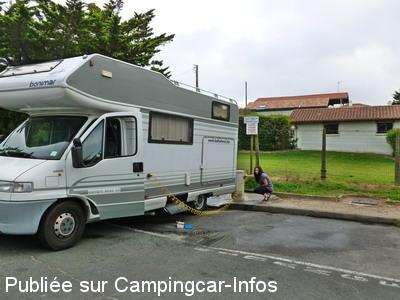

ASN = Aire de services avec stationnement nuit possible de :
BIARRITZ
(N° 694)
Accès/adresse :
Avenue de la Milady
Aire municipale Milady
64200 BIARRITZ
Aire municipale Milady
64200 BIARRITZ
Latitude : (Nord) 43.46532° Décimaux ou 43° 27′ 55′′
Longitude : (Ouest) -1.57162° Décimaux ou -1° 34′ 17′′
Tarif : 2016
Stationnement, électricité : 12 €
Paiement carte bancaire uniquement
Type de borne : Autre
Services :


Poubelles
A proximité de la plage de la Milady
Autres informations :
Ouvert toute l'année
32 emplacements sur terrain plat goudronné
28 prises électriques
Stationnement limité 48 h
Accès interdit aux C-C avec remorque
http://tourisme.biarritz.fr/fr/point-infos
Le 15/12/2015 par CLIFORD 33
Le 15/12/2015 par CLIFORD 33
Le 09/10/2014 par CLIFORD 33
Le 08/10/2014 par CLIFORD 33
Le 22/12/2011 par Ballesteros

Le 22/12/2011 par Ballesteros
de
olivier372
le 18/02/2016 :
De passage le 17/02 Attention, pas possible de stationner seulement quelques heures pour visiter Biarritz. Nous avons du reculer jusqu"au rond point. D"ailleurs, il est impossible de stationner avec un camping-car ailleurs que sur cette aire à Biarritz.
De passage le 17/02 Attention, pas possible de stationner seulement quelques heures pour visiter Biarritz. Nous avons du reculer jusqu"au rond point. D"ailleurs, il est impossible de stationner avec un camping-car ailleurs que sur cette aire à Biarritz.
de
Alain et Paty
le 26/01/2016 :
bonjour
belle aires en effet, mais vraiment que pour une nuit et la vue sur plage trés proche; par contre trés trés bruyante meme en janvier 2016; Pour les amateurs de tranquillité , je ne la conseille pas.
bonjour
belle aires en effet, mais vraiment que pour une nuit et la vue sur plage trés proche; par contre trés trés bruyante meme en janvier 2016; Pour les amateurs de tranquillité , je ne la conseille pas.
de
Ecureuil 24
le 04/01/2016 :
Bonjour,
le 1er et le 2 janvier 2016. L'aire est idéalement située. La plage à 100 m avec les baigneurs du 1er janvier.
Bonjour,
le 1er et le 2 janvier 2016. L'aire est idéalement située. La plage à 100 m avec les baigneurs du 1er janvier.
de
CLIFORD 33
le 15/12/2015 :
Passage le 27/28/11/2015 air très bien cela fais plusieurs fois que j'y viens
les prises électriques son réparé 1 pour chaque c-car
ne pas rentré avec une remorque (peu plus sortir max...8m)
plage jeux enfant 100m . navette gratuite pour centre ville (sauf le dimanche) très belle balade a pied ou vélo (attention au cote)
Merci la ville de Biarritz
Passage le 27/28/11/2015 air très bien cela fais plusieurs fois que j'y viens
les prises électriques son réparé 1 pour chaque c-car
ne pas rentré avec une remorque (peu plus sortir max...8m)
plage jeux enfant 100m . navette gratuite pour centre ville (sauf le dimanche) très belle balade a pied ou vélo (attention au cote)
Merci la ville de Biarritz
de
Pat.
le 24/05/2015 :
De passage le 13 mai 2015. Même problème que le commentaire précédent. Le parking affichait complet alors qu'il y avait des places de disponibles. Dommage que dès qu'une place se libère,nous ne pouvons pas accéder. Après avoir patienté, nous avons réussi à rentrer. Avec ce système, la Ville de Biarritz perd des clients. Avant la mise en place de cette barrière, le parking était complet le soir. Maintenant il reste la moitié d'emplacements non occupés, beaucoup de camping caristes n'ont pas eu notre patience, et sont allés voir ailleurs. Je ne suis pas contre le fait de payer, mais le système serait à revoir.
De passage le 13 mai 2015. Même problème que le commentaire précédent. Le parking affichait complet alors qu'il y avait des places de disponibles. Dommage que dès qu'une place se libère,nous ne pouvons pas accéder. Après avoir patienté, nous avons réussi à rentrer. Avec ce système, la Ville de Biarritz perd des clients. Avant la mise en place de cette barrière, le parking était complet le soir. Maintenant il reste la moitié d'emplacements non occupés, beaucoup de camping caristes n'ont pas eu notre patience, et sont allés voir ailleurs. Je ne suis pas contre le fait de payer, mais le système serait à revoir.
de
bogé56
le 24/04/2015 :
le 5/04/2015
N'avons pas pu rentrer sur cette aire, la borne affichait " complet" alors qu'il y avait encore des place???
Mais, aucun regrets car il y avait un " blaireau " qui faisait marcher sa sono à fond, comme à la fête foraine.
le 5/04/2015
N'avons pas pu rentrer sur cette aire, la borne affichait " complet" alors qu'il y avait encore des place???
Mais, aucun regrets car il y avait un " blaireau " qui faisait marcher sa sono à fond, comme à la fête foraine.
de
Sandra
le 26/02/2015 :
De passage pendant les vacances de février. Aire bien réaménagée avec électricité, proche de la plage. Place spacieuse et deux endroits pour les services.
Pour le centre ville navette gratuite à proximité toutes les 30 mn. Biarritz est magnifique !! Merci à la municipalité de leurs efforts pour nous accueillir.
De passage pendant les vacances de février. Aire bien réaménagée avec électricité, proche de la plage. Place spacieuse et deux endroits pour les services.
Pour le centre ville navette gratuite à proximité toutes les 30 mn. Biarritz est magnifique !! Merci à la municipalité de leurs efforts pour nous accueillir.
de
YvesObène
le 05/01/2015 :
De passage en décembre 2014 : l'aire est toujours aussi saturée et bruyante. Les bornes électriques sont en mauvais état et nous étions 10 campings-cars pour 3 prises de courant. Donc ça disjoncte. Et le tarif est le même 12 €.
C'est vraiment se moquer des campings-caristes. Avons passé une nuit et avons respecté le souhait de la Mairie : nous sommes partis voir ailleurs !
De passage en décembre 2014 : l'aire est toujours aussi saturée et bruyante. Les bornes électriques sont en mauvais état et nous étions 10 campings-cars pour 3 prises de courant. Donc ça disjoncte. Et le tarif est le même 12 €.
C'est vraiment se moquer des campings-caristes. Avons passé une nuit et avons respecté le souhait de la Mairie : nous sommes partis voir ailleurs !
de
Michel 28
le 09/11/2014 :
De passage à Biarritz le 8/10(barrières ouvertes), nous
nous sommes stationnés à 11h20. A 11h30, 2 personnes de Vinci sont passées pour faire payer 12 euros. Passer de 10 à 12 euros sans amélioration de l'aire me semble abusif. 40 emplacements et 28 prises électriques, il semble y avoir un problème.De plus, certaines sont en mauvais états et à la limite dangereuses.
Les campings caristes semblent être pris pour des pigeons.
De passage à Biarritz le 8/10(barrières ouvertes), nous
nous sommes stationnés à 11h20. A 11h30, 2 personnes de Vinci sont passées pour faire payer 12 euros. Passer de 10 à 12 euros sans amélioration de l'aire me semble abusif. 40 emplacements et 28 prises électriques, il semble y avoir un problème.De plus, certaines sont en mauvais états et à la limite dangereuses.
Les campings caristes semblent être pris pour des pigeons.
de
Marcel
le 05/10/2014 :
Nous y avons passé la nuit du samedi 27.09.2014, barrière ouverte, personne n'est venu encaisser quoi que ce soit (saison oblige peut-être…?). Aire totalement saturée dès 19h00. Endroit plutôt bruyant en raison de la rue toute proche. Le nombre de prises électriques est insuffisant, d'autant plus que certaines sont cassées et inutilisables. Relativement loin du centre de Biarritz (env. 2.6 km), mais arrêt de bus "Thermes-Marins" à proximité, permet d'atteindre le centre en 10 minutes, toutefois peu de liaisons le dimanche.
Nous y avons passé la nuit du samedi 27.09.2014, barrière ouverte, personne n'est venu encaisser quoi que ce soit (saison oblige peut-être…?). Aire totalement saturée dès 19h00. Endroit plutôt bruyant en raison de la rue toute proche. Le nombre de prises électriques est insuffisant, d'autant plus que certaines sont cassées et inutilisables. Relativement loin du centre de Biarritz (env. 2.6 km), mais arrêt de bus "Thermes-Marins" à proximité, permet d'atteindre le centre en 10 minutes, toutefois peu de liaisons le dimanche.
de
CLIFORD 33 LE 22/09/2014
le 22/09/2014 :
Passage a BIARRITZ le 19/20/21/09/2014 endroit bruyant cause de route a proximitée plage jeux pour enfant belle promenade boulanger a 8h30 env-- tres belle ville a visité vidange cassette eau usée eau prope electrecité 16 amp manque de prise mise en place des barriéres a PEAGE CB 12€ pour 24h très cher en basse saison MERCI BIARRITZ BRIGITTE & JOEL
Passage a BIARRITZ le 19/20/21/09/2014 endroit bruyant cause de route a proximitée plage jeux pour enfant belle promenade boulanger a 8h30 env-- tres belle ville a visité vidange cassette eau usée eau prope electrecité 16 amp manque de prise mise en place des barriéres a PEAGE CB 12€ pour 24h très cher en basse saison MERCI BIARRITZ BRIGITTE & JOEL
de
Marie & Gerard
le 27/11/2012 :
cette aire est correct a savoir qu il y a dans le prix l eau ,l EDF la vidange et la plage a 250 m et de plus un petit resto sur la plage ouvert toute l année 7/7 hyper sympa
cette aire est correct a savoir qu il y a dans le prix l eau ,l EDF la vidange et la plage a 250 m et de plus un petit resto sur la plage ouvert toute l année 7/7 hyper sympa
de
La Note Bleue
le 19/09/2010 :
Bonjour. Aire très, très bruyante avec deux points pour les services. Environ 50 cm entre chaque CC ! Néanmoins, compte tenu de la configuration de la ville et de la densité de constructions, c'est un bel effort (sur le parking de l'autre côté du boulevard, cela aurait été beaucoup mieux). Très bien située (plage à 100 m, supermarché à 250 m) mais aussi bus de jour comme de nuit pour le centre-ville (mairie, musée de la mer, rocher de la VIERGE, etc. Aller à 150 m en marchant vers le supermarché en montant, retour de l'autre côté du boulevard à 50 m).
Les points d'électricité me semblent suffisants: il suffit de détenir une belle rallonge et un gentil sourire pour mettre avec un camarade une multiprises:)
Bonjour. Aire très, très bruyante avec deux points pour les services. Environ 50 cm entre chaque CC ! Néanmoins, compte tenu de la configuration de la ville et de la densité de constructions, c'est un bel effort (sur le parking de l'autre côté du boulevard, cela aurait été beaucoup mieux). Très bien située (plage à 100 m, supermarché à 250 m) mais aussi bus de jour comme de nuit pour le centre-ville (mairie, musée de la mer, rocher de la VIERGE, etc. Aller à 150 m en marchant vers le supermarché en montant, retour de l'autre côté du boulevard à 50 m).
Les points d'électricité me semblent suffisants: il suffit de détenir une belle rallonge et un gentil sourire pour mettre avec un camarade une multiprises:)